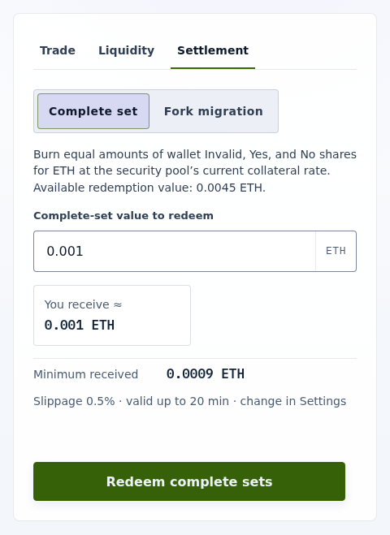

How-to guide
Handle resolution
A trading pool closes to swaps and added liquidity when its question ends; the market finalizes later, when its outcome is final. Use this guide from question end onward to turn LP tokens, complete sets, and winning shares back into ETH.
Unwind after question end
- Remove your LP tokens from the trading pool into Yes and No shares (Remove liquidity).
- Redeem matching Invalid, Yes, and No as complete sets while the SecurityPool is
Operationaland its universe has not forked. After a fork, follow Handle a universe fork instead. - After the market finalizes, redeem the winning share through
SecurityPool.redeemShares, which requires the SecurityPool to beOperational.
On an Invalid result, Invalid is the only winning share. Yes and No balances, including trading fees earned as LP, are worth nothing once they lose. Each redemption burns the redeemed shares and pays ETH at the SecurityPool's current collateral rate.
In the UI
Open the market. A closed market opens on its Settlement tab.
- To redeem complete sets, select Complete set, enter the ETH value in Complete-set value to redeem, check You receive ≈, and select Redeem complete sets.
- Once the market finalizes, a Redeem Yes, Redeem No, or Redeem Invalid option appears for the winning outcome. It redeems your entire balance of that share through this exact SecurityPool. Before finalization the option is absent.

Every settlement transaction is simulated again at the latest block before your wallet opens, and stops if it would now fail.